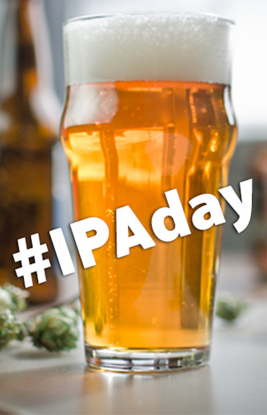

Beer Description
America’s favorite style of craft beer of late is pretty easy to name: IPA. Those three letters can sell almost anything, market analysis tells us year after year. Over time, the IPA category has splintered further into a dozen sub-styles: Every color, every strength, every possible combination of yeast strains. Beyond hoppy, drinkers and brewers can seem to change their mind about what they want the style to be year after year. While this riffing on a common theme is far from new in beer, it can seem to affect IPAs far more than other styles. Maybe that’s because India Pale Ale has always had a hazy identity, full of twists and turns right from the start.
Ingredients
- 11.75 lbs. (5.3 kg) US 2-row pale malt
- 1.4 lbs. (0.64 kg) Munich malt (9 °L)
- 13 oz. (0.36 kg) crystal malt (20 °L)
- 9 oz. (0.25 kg) crystal malt (40 °L)
- 16.3 AAU Nugget hops (60 min.) (1.25 oz./35 g at 13% alpha acid)
- 16.3 AAU Simcoe® hops (5 min.) (1.25 oz./35 g at 13% alpha acid)
- 1.25 oz. (35 g) Amarillo® hops (0 min.)
- 1.25 oz. (35 g) Citra® hops (dry hop)
- ½ tsp. yeast nutrient (15 min.)
- Wyeast 1056 (American Ale) yeast
Step by step
- This is a single infusion mash. Heat 4.5 gallons (17 L) of strike water for a mash ratio of about 1.25 quarts per pound of grain (2.6 L/kg). Target a mash temperature of 154 °F (68 °C) and hold for 60 minutes. Batch sparge with enough water to collect approximately 7 gallons (26.4 L) of wort runoff and bring to a boil. The goal is to get 5.5 gallons (21 L) of wort into the fermenter.
- Boil the wort for 60 minutes adding the Nugget hops at the beginning, the yeast nutrients with 15 minutes left in the boil, and the Simcoe® hop addition with five minutes remaining in the boil. After turning off the heat, add the Amarillo® hops, then chill the wort to 68 °F (20 °C) and pitch the yeast, preferably as a 1.5-L yeast starter if pitching liquid yeast. Hold at this temperature for the duration of primary fermentation. Fermentation should take 10–14 days. Following fermentation, dry hop with Citra® hops for five days before bottling or transferring to keg. Prime to 2.4 volumes of CO2.